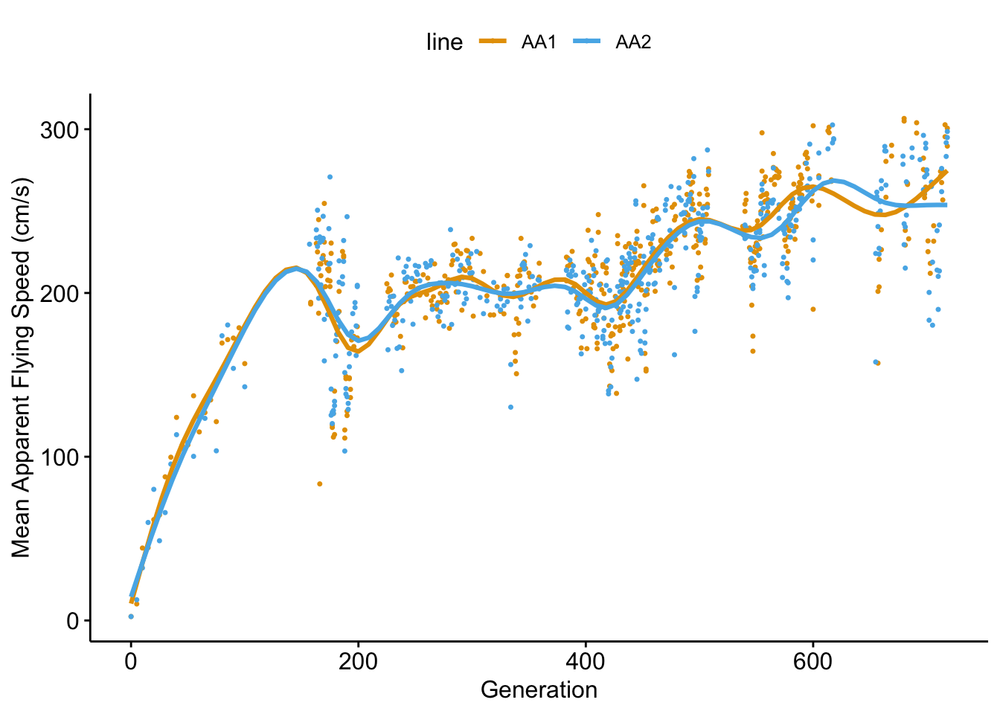
Wind Tunnel Flies Analysis
Selected lines have continued to increase mean apparent flying speed for 30+ years
Selection started on or before 1991 and continued until 2023.
Concerns:
The AA1 and AA2 lines have remarkably similar fit, which could result from
- Climate (temperature/humidity) fluctuations in the room during selection runs
- Climate (temperature/humidity/light) fluctions in the rearing room. Since 2001 the temperature and humidity have been well controlled.
- Husbandry modifications
- Gene flow between lines
Selected lines have 30-40% higher upwind flight ability than control or wild type lines
Experiment 1 (Simons-Walker data)
Linear mixed model
exp1_lmm <- lmer(wind_speed ~ treatment * sex + (1 | line), data = exp1)| treatment | sex | emmean | SE | df | lower.CL | upper.CL |
|---|---|---|---|---|---|---|
| CN | F | 135.4 | 6.23 | 2.9 | 115.0 | 155.7 |
| AA | F | 178.3 | 5.99 | 2.4 | 156.5 | 200.0 |
| CN | M | 122.9 | 6.08 | 2.6 | 101.7 | 144.1 |
| AA | M | 173.7 | 6.04 | 2.5 | 152.3 | 195.1 |
| contrast | estimate | SE | df | lower.CL | upper.CL | t.ratio | p.value | effect_std | effect_perc |
|---|---|---|---|---|---|---|---|---|---|
| F: AA - CN | 42.9 | 8.64 | 2.7 | 13.2 | 72.6 | 5.0 | 0.021 | 2.8 | 31.7 |
| M: AA - CN | 50.8 | 8.57 | 2.6 | 20.6 | 80.9 | 5.9 | 0.015 | 3.3 | 41.3 |
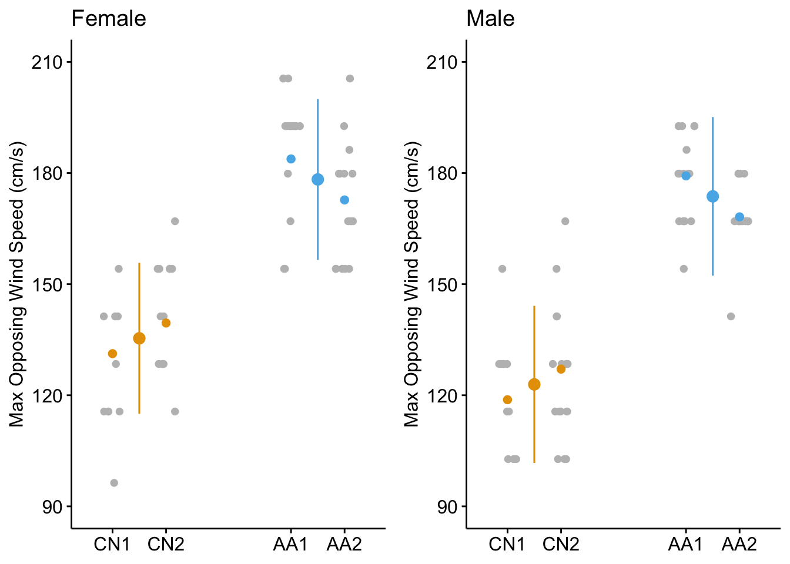
Supplementary models (in supplement)
Classical ANCOVA
lm_ancova <- lm(wind_speed ~ treatment * sex + room_temp, data = exp1) Estimate Std. Error t value Pr(>|t|)
(Intercept) 81.711480 19.4038624 4.211094 5.489451e-05
treatmentAA 42.306592 4.4651446 9.474854 1.183689e-15
sexM -11.954235 4.5686965 -2.616553 1.023147e-02
room_temp 2.515874 0.8895549 2.828239 5.635325e-03
treatmentAA:sexM 7.766310 6.1944225 1.253758 2.127958e-01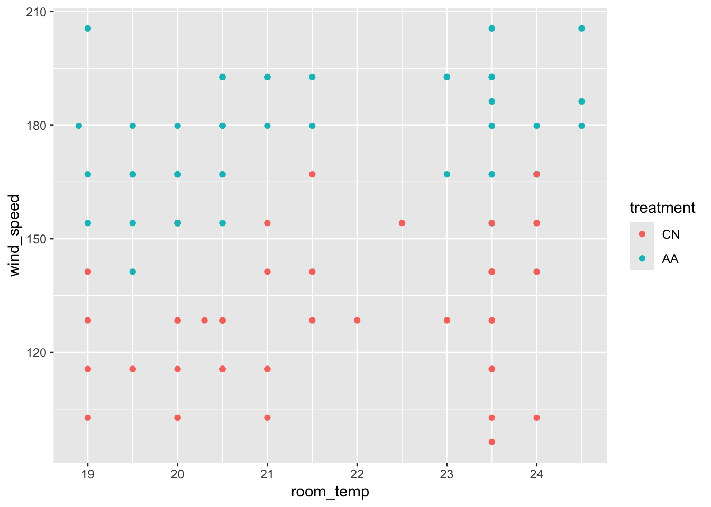
Random intercept with covariate
exp1_lmm_2 <- lmer(wind_speed ~ treatment * sex + room_temp + (1 | line), data = exp1)| Estimate | Std. Error | df | t value | p-value | |
|---|---|---|---|---|---|
| treatmentAA | 42.9 | 7.60 | 2.8 | 5.6 | 0.013 |
| sexM | -12.3 | 4.39 | 100.1 | -2.8 | 0.006 |
| room_temp | 2.0 | 0.88 | 101.8 | 2.3 | 0.025 |
| treatmentAA:sexM | 7.5 | 5.95 | 100.1 | 1.3 | 0.211 |
| contrast | estimate | SE | df | lower.CL | upper.CL | t.ratio | p.value | effect_std |
|---|---|---|---|---|---|---|---|---|
| F: AA - CN | 42.9 | 7.60 | 2.8 | 17.8 | 67.9 | 5.6 | 0.013 | 2.8 |
| M: AA - CN | 50.4 | 7.52 | 2.7 | 24.9 | 75.9 | 6.7 | 0.009 | 3.3 |
Classical nested ANOVA
exp1_aov <- aov(wind_speed ~ treatment * sex + Error(line / sex),
data = exp1)summary(exp1_aov)
Error: line
Df Sum Sq Mean Sq
treatment 1 58570 58570
sex 1 3237 3237
treatment:sex 1 3 3
Error: line:sex
Df Sum Sq Mean Sq F value Pr(>F)
sex 1 1808.1 1808.1 5.617 0.141
treatment:sex 1 403.2 403.2 1.253 0.379
Residuals 2 643.7 321.9
Error: Within
Df Sum Sq Mean Sq F value Pr(>F)
Residuals 99 23708 239.5 Experiment 2 (Wheeler) data
To compare to Exp1 (Simons-Walker) results, I am using wind tunnel speed and not the computed speed of the fly. But I will analyze that in a supplement. Jess has 3 measures per fly; since these are at same tunnel speed, I just need to obtain the summary data as the primary data set.
Estimate Treatment Effects
Estimate Std. Error df t value Pr(>|t|)
(Intercept) 90.29973 6.673737 3.152007 13.530610 6.747727e-04
treatmentWild 11.42369 9.472730 3.198690 1.205956 3.094040e-01
treatmentAA 61.85944 9.435469 3.148647 6.556054 6.205628e-03
sexM -11.59091 2.155431 2570.307890 -5.377538 8.231327e-08
treatmentWild:sexM 17.81702 3.237003 2569.362508 5.504172 4.076251e-08
treatmentAA:sexM 10.61994 3.039859 2569.423302 3.493562 4.846769e-04 treatment sex emmean SE df lower.CL upper.CL
CN F 90.3 6.67 3.14 69.6 111.0
Wild F 101.7 6.72 3.24 81.2 122.3
AA F 152.2 6.67 3.14 131.5 172.9
CN M 78.7 6.67 3.15 58.0 99.4
Wild M 107.9 6.72 3.23 87.4 128.5
AA M 151.2 6.68 3.15 130.5 171.9
Degrees-of-freedom method: kenward-roger
Confidence level used: 0.95 contrast estimate SE df lower.CL upper.CL t.ratio
<fctr> <num> <num> <num> <num> <num> <num>
1: F: AA - CN 61.85944 9.435633 3.141336 32.58108 91.13780221 6.555939
2: F: AA - WT 50.43575 9.470134 3.187887 21.27793 79.59356322 5.325769
3: F: CN - WT -11.42369 9.472880 3.191263 -40.57381 17.72642498 -1.205937
4: M: AA - CN 72.47938 9.442206 3.150362 43.22535 101.73339881 7.676106
5: M: AA - WT 43.23866 9.471343 3.189398 14.08436 72.39296473 4.565209
6: M: CN - WT -29.24071 9.468717 3.185970 -58.40335 -0.07807473 -3.088139
p.value effect_std
<num> <num>
1: 0.006251600 4.052834
2: 0.011063085 3.304390
3: 0.309582493 -0.748444
4: 0.003859746 4.748618
5: 0.017242876 2.832860
6: 0.049662847 -1.915759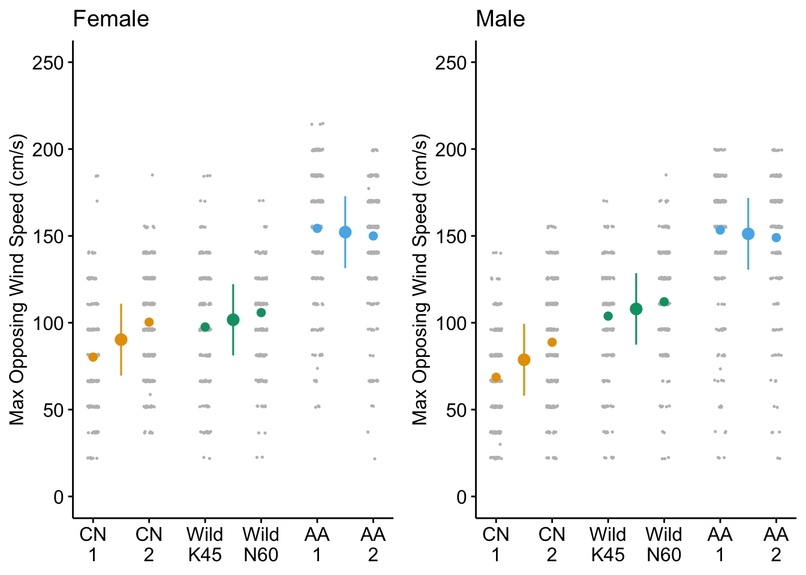
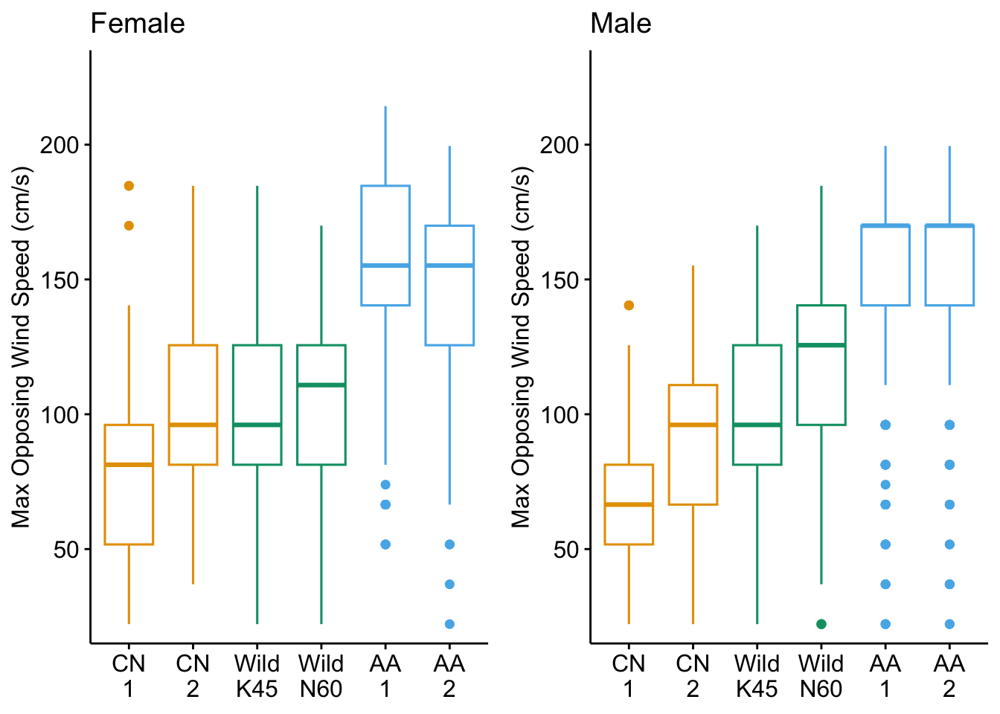
The combined plot suggests that Experiment 2 collected substantial submaximal data
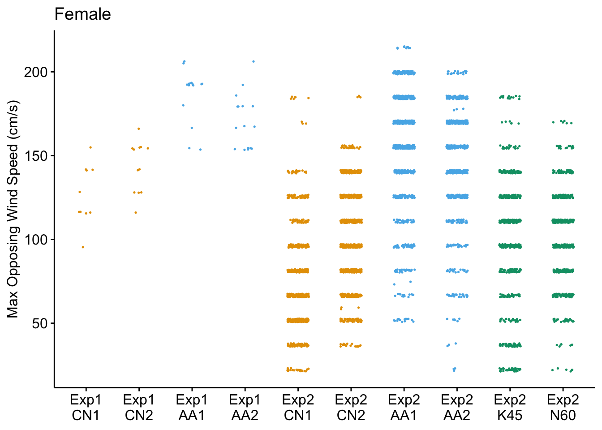
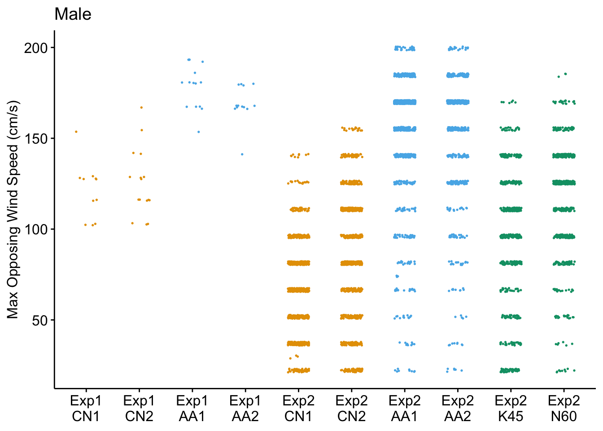
Head and Thorax
Evolution of wing size and shape in selected lines is small (about 1% difference), at least relative to flight performance and body size
For wing anatomy, see https://flybase.org/reports/FBim0000853?utm_source=chatgpt.com
and especially https://pmc.ncbi.nlm.nih.gov/articles/PMC11457947/?utm_source=chatgpt.com
WZA1MA16pp.txt : 38 landmarks
WZA1MB19pp.txt : 36 landmarks
WYA2FA3pp.txt : 36 landmarks
WZA2MA15pp.txt : 36 landmarks
WXK4FA14pp.txt : 38 landmarks
WYK4FB16pp.txt : 38 landmarks
WYK4MA3pp.txt : 38 landmarks
WYN6FA9Rpp.txt : 36 landmarks
WXN6MA10pp.txt : 38 landmarksSuperimposed mean wing shapes show that Selected flies have more distal wing
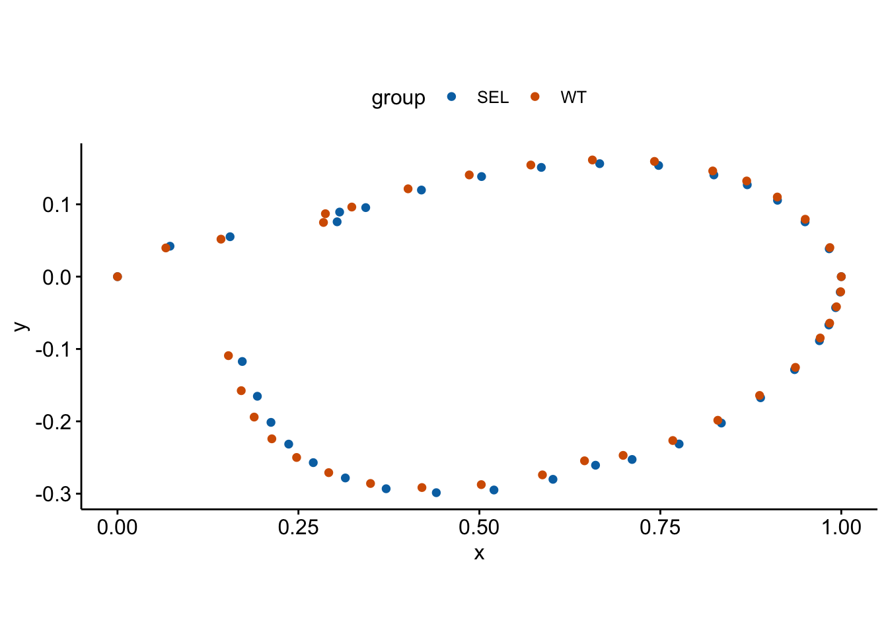
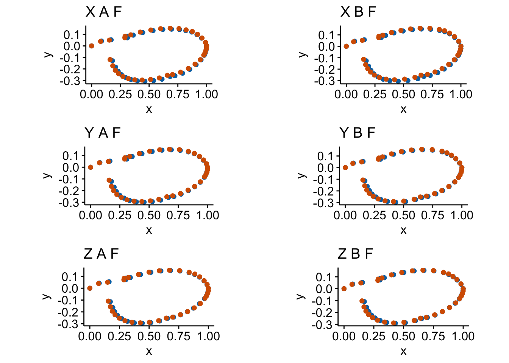
Biomechanically relevant wing metrics show small (1%) changes in wing size and shape
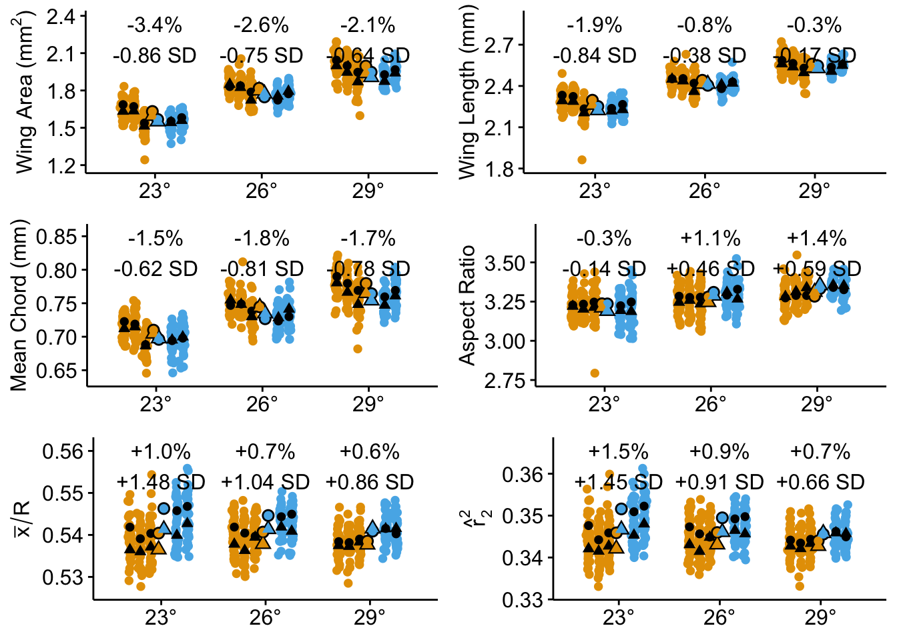
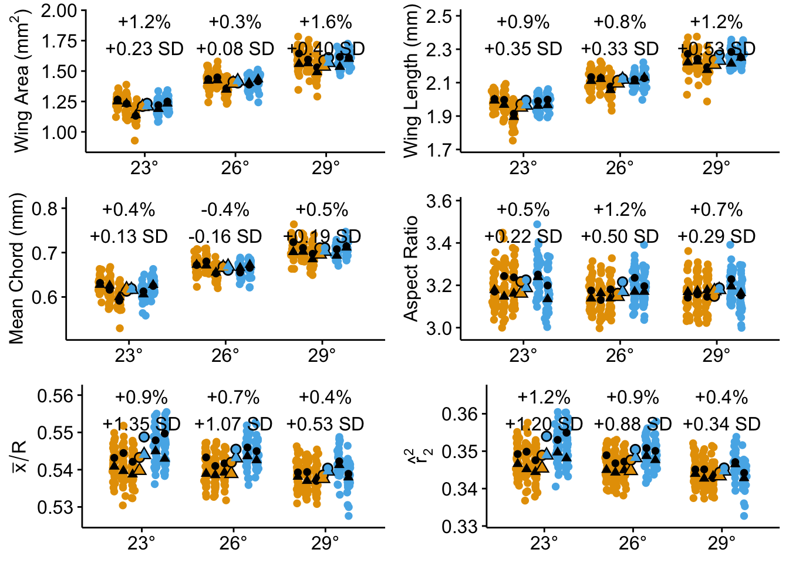